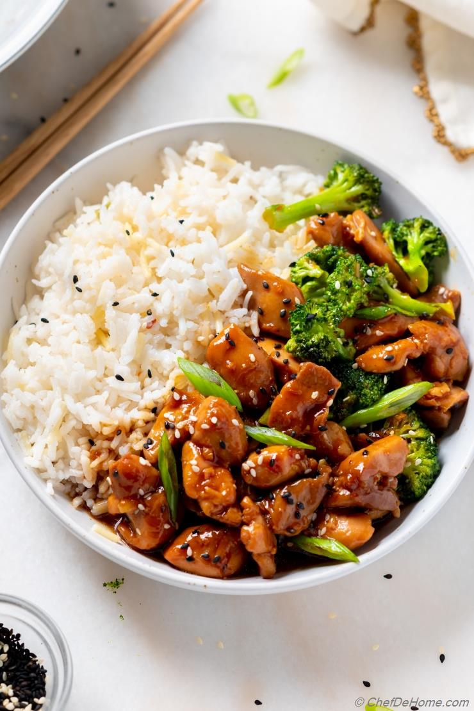

Chicken Teriyaki

A Japanese dish of meat or fish that is grilled or broiled after being soaked in a seasoned soy sauce marinade.
A sweet and tangy sticky sauce, authentic teriyaki delivers a big hit of salty umami from its simple base of soy sauce and mirin, a low-alcohol, sweeter version of sake, a traditional Japanese rice wine.
Ingredients
- 1 cup soy sauce
- 1 cup granulated sugar
- 1.5 teaspoons brown sugar
- 6 cloves garlic, crushed in a press
- 2 teaspoons grated fresh ginger
- .25 teaspoon freshly ground black pepper
- 1 3-inch cinnamon stick
- 1 tablespoon pinapple juice
- 8 skinless, boneless chicken thighs
- 2 tablespoons cornstarch
Steps
- In a small saucepan, combine all ingredients except cornstarch and chicken. Bring to boil over high heat. Reduce heat to low and stir until sugar is dissolved, about 3 minutes. Remove from heat and let cool. Discard cinnamon stick and mix in 1/2 cup water.
- Place chicken in a heavy-duty sealable plastic bag. Add soy sauce mixture, seal bag, and turn to coat chicken. Refrigerate for at least an hour, ideally overnight.
- Remove chicken and set aside. Pour mixture into a small saucepan. Bring to a boil over high heat, then reduce heat to low. Mix cornstarch with 2 tablespoons water and add to pan. Stir until mixture begins to thicken, and gradually stir in enough water (about 1/2 cup) until sauce is the consistency of heavy cream. Remove from heat and set aside.
- Preheat a broiler or grill. Lightly brush chicken pieces on all sides with sauce, and broil or grill about 3 minutes per side. While chicken is cooking, place sauce over high heat and bring to a boil, then reduce heat to a bare simmer, adding water a bit at a time to keep mixture at a pourable consistency. To serve, slice chicken into strips, arrange on plates, and drizzle with sauce.